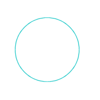
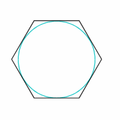
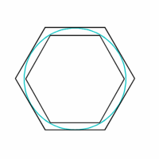
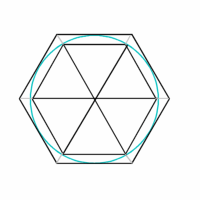

Calculate Pi,
How Archimedes calculated pi:
First Archimedes would draw as perfect circle
as he could, most likely using a compass.
Then he would draw a hexagon on
the outside of this circle, making the edges touch
the edge of the circle.
Archimedes then drew another hexagon inside
the circle, edges once again touching.
Archimedes would then double the sides of the polygon over and over, until he thought that it was enough. He would then divide the polygons into triangles and using trigonometry he would find the length of one side of the polygon and multiply that by the number of sides. Once he had done that too both polygons he could find what the circumference of the circle was between. He would then divide the circumference by the diameter that would give him two numbers that Pi was between.
